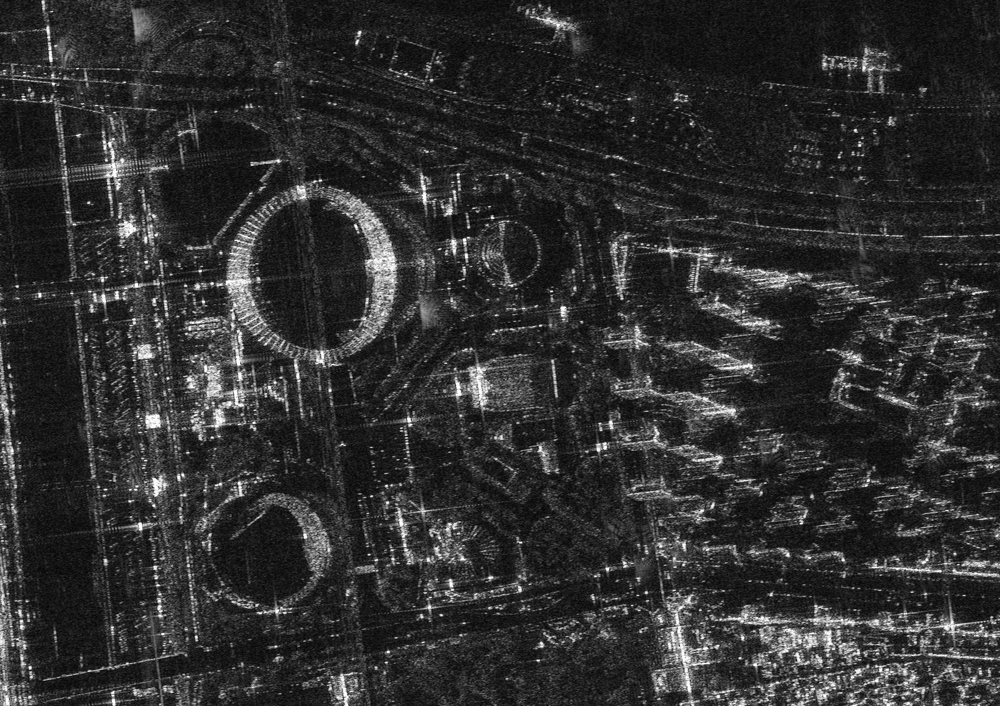

연구 과제
고해상도 SAR 영상을 이용한 미세 변화탐지 알고리즘 개발

개요
위성 SAR 해상도 향상에 따라 자연재해 감시나 지형의 미세한 변화 탐지 수요가 커졌으나, 기존 변화탐지 알고리즘을 고해상도 SAR 영상에 적용하면 기하 구조와 스페클의 영향으로 정확도가 떨어지는 문제를 다룬 과제이다. 동일 제목의 최종보고서 초록에 따르면 1차년도에는 문헌 조사와 고해상도 모드에서의 복합 건물 산란 특성 분석을, 2차년도에는 실제 고해상도 SAR 영상에 적용 가능한 변화탐지 알고리즘을 구현하고 영상 해상도·시간 간격·대상 물체 특성을 분석하여 기존 광학·중해상도 SAR 변화탐지와의 차별성을 검증하였다. 연구실은 2015년 대한원격탐사학회지 논문에서 로그비(log-ratio) 연산자와 K-S 검정, Kittler–Illingworth 최소오차 임계값 기법으로 영상의 통계분포를 반영한 임계값 추정 알고리즘을 제안하고, 모의 데이터와 Cosmo-SkyMed·KOMPSAT-5 실제 영상으로 검증하였다.
주요 내용·성과
- 통계분포 기반 임계값 추정을 적용한 고해상도 SAR 변화탐지 알고리즘 구현 및 Cosmo-SkyMed, KOMPSAT-5 영상 검증 (대한원격탐사학회지 31(3), 2015, pp. 227–244)
- 동일 제목 국가R&D 최종보고서(TRKO201500011070): 1차년도 문헌·산란특성 분석, 2차년도 알고리즘 구현 및 실영상 적용
- 변화탐지의 전처리인 다중해상도 SAR 영상 정합·기하보정 기법 연구 (2014)
관련 논문·발표
- Development of change detection algorithm using high resolution SAR complex image (APSAR 2015)
- An efficient automatic georegistration technique for high-resolution spaceborne SAR image fusion (IGARSS 2011)